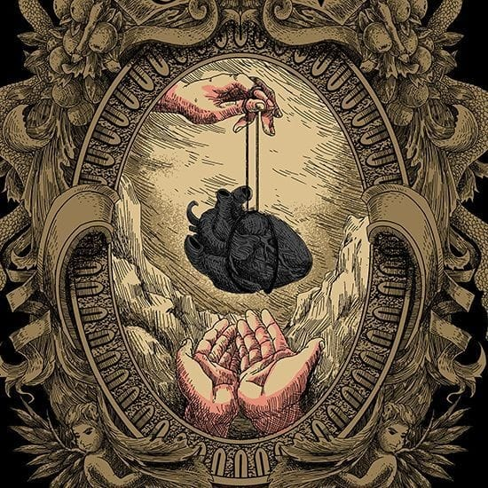

Introducción
Las terapias holisticas son aquellas que buscar sanar al ser en todos sus niveles: fisico, mental, emocional y espiritual. Se basan en el principio de que el ser humano es una unidad integrada y que todos los aspectos de su vida estan interrelacionados. Por eso este tipo de terapias no se enfoncan solo en los sintomas, sino en las causas mas profundas que la originan y en el equilibrio general del individuo. Dentro de las terapias que ofrecemos podes encontar: Limpieza y armonizacion personales y de espacios, Rito del útero, Rito orazon, Masajes energeticos, Meditacion.
Las terapias holisticas tiene muchos beneficios para la salud y el bienestar.... como reducir el estres, la ansiedad, aliviar dolores, mejorar el sueño, favorecer el crecimiento personal y espiritual. Son una magica opcion para complementar nuestras necesidades emocionales y nos brindan la confianza y la motivacion que muchas veces no encontramos
El RITO DEL UTERO es una ceremonia de sanación ancestral femenina, que busca la liberacion del clan. Desde siete generaciones para atras y siete para adelante. Es una iniciacion chamanica que se transmite de mujer a mujer, de utero a utero, el caliz de vida que contiene la creatividad, el amor, la fuerza, la belleza y la libertad femenina. Si lo que buscas es liberarte de las creencias limitantes de miedos y culpas, conectar con tu poder creador, armonizar tu energia femenina, o bie... sanar las heridas de tu utero y el de tu linaje como: abuso, violencia,infertilidad, ect. Te invito a conectar con vos, y expresarte sin miedo ni apego. De manera individual o grupal, el rito se puede hacer una sola vez o varias veces, depende de vos; de tu necesidad.

El Rito Corazon, es otra ceremonia ancestral; pero en este caso se enfoca en la sanación del linaje masculino. El ritual va dirijido a liberar tanto a hombres como a mujeres de las cargas e imposiciones de la rama paterna como la violencia, la represion, el machismo, el abandono, la falta de afecto, la traicion, el rechazo entre otras. El rito se conecta con el corazon como centro de la luz y el amor. Si te resuena algo de lo sigiente, quedare a disposicion para agendar una cita... Reconectar tu poder protector, armonizar la energia masculina con la energia de la madre tierra, liberarte de los patrones establecidos de una forma sana y equilibrada. etc
Las limpiezas energeticas son practicas que buscan eliminar las energias negativas o estancadas que puedan afectar nuestro bienestar fisico, mental, emocional y/o espiritual. Renovar la energia vital, armonizar el campo aurico y tus centros energeticos, como asi tambien mejorar el estado de animo. Se pueden realizar sobre personas o ambientes. En algunos casos pueden ser a distancia, segun el caso o la necesidad. Restaurar tu equilibrio y armonia o simplemente si buscas renovar la energia y prepararte para un nuevo ciclo.